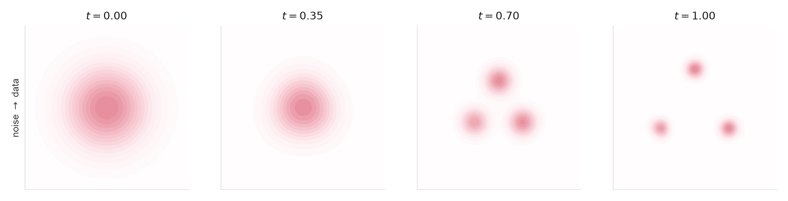
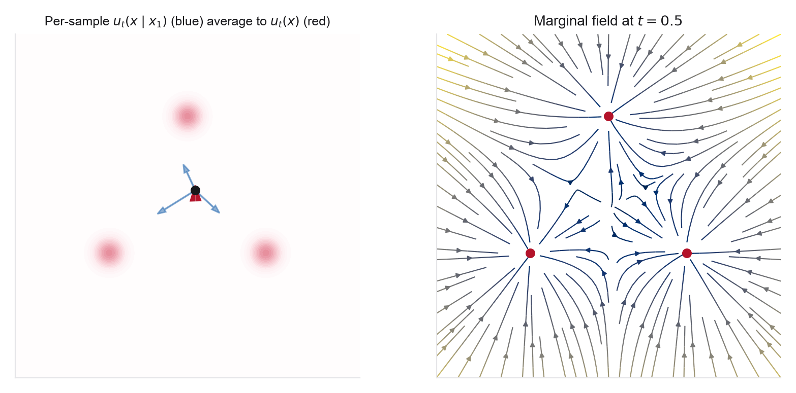
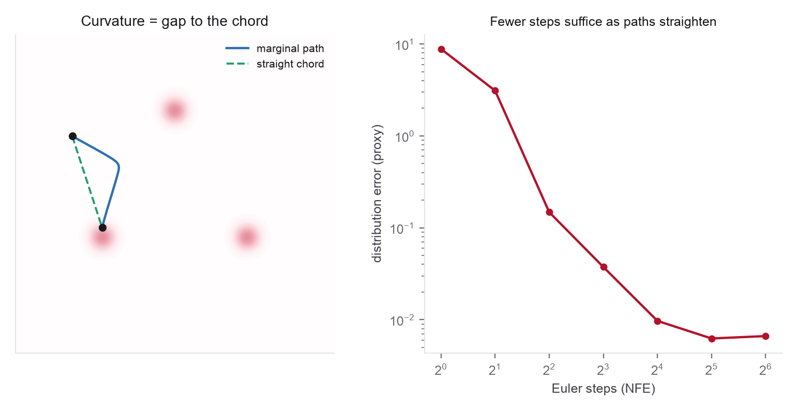
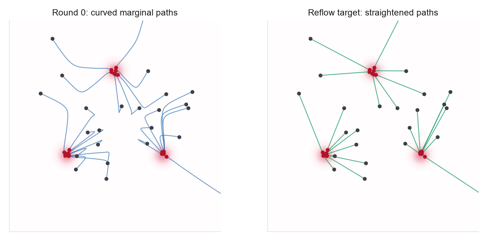
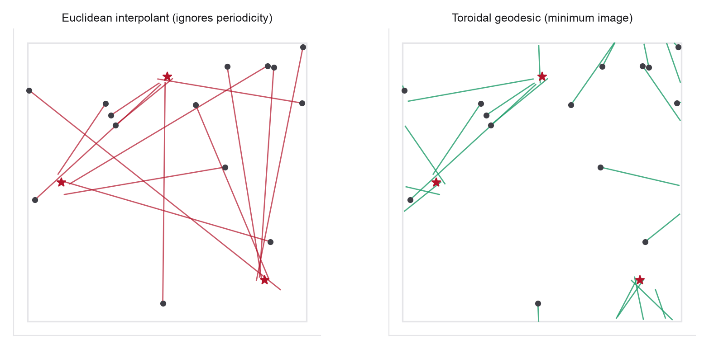

These notes condense the Week 3 readings into the ideas you need, organized by concept rather than by paper. Every section names its source and the problem that uses it. Notation continues from Weeks 1-2, with the velocity field \(u_t\) returning as the learned object, now regressed onto a path you choose rather than integrated from a fixed noising process. The through-line: pick a probability path, regress a velocity onto it by conditional expectation, and straighten the path to sample fast.
1From an inherited path to a chosen one
Week 2 ended on the probability-flow ODE: diffusion is, underneath, a deterministic Week 1 flow whose velocity is built from the score. But its path is inherited from a Gaussian noising process and it curves, which is why sampling needs many steps. Flow matching makes the path a choice. Fix a base density \(p_0\) you can sample (a standard Gaussian) and the data \(p_1=q\), and pick any probability path \(p_t\) between them; the model learns the velocity \(u_t\) that transports \(p_0\) along it. Diffusion becomes one curved member of a large family, and the simplest member, the straight-line interpolant, is both easier to learn and cheaper to sample.
2Probability paths and the marginal vector field
Build the path from pieces you can write down. A conditional path \(p_t(x\mid x_1)\) interpolates the base density and a single data point \(x_1\); for the \(\sigma_{\min}=0\) straight interpolant \(x_t=(1-t)x_0+t x_1\) with \(x_0\sim\mathcal N(0,I)\), and for \(t<1\), it is the Gaussian \(\mathcal N(t x_1,(1-t)^2 I)\) with conditional velocity \(u_t(x\mid x_1)=(x_1-x)/(1-t)\). (The velocity is singular at \(t=1\); in practice one uses a small \(\sigma_{\min}>0\) to keep it finite at the data end.) Averaging over data gives the marginal path \(p_t(x)=\int p_t(x\mid x_1)\,q(x_1)\,\mathrm dx_1\), and the key structural fact, the marginalization trick, is that it is generated by the posterior-weighted average of the conditional velocities,
This marginal field satisfies the continuity equation for \(p_t\), so integrating \(\dot x=u_t(x)\) transports \(p_0\) onto \(q\). It is the exact object a flow-matching network approximates; the trouble is only that the posterior weight involves the unknown normalizer \(p_t(x)\), the same obstruction as the score in Week 2.

3Conditional flow matching and its unbiasedness
The intractable objective is to match the marginal field, \(\mathbb E_{t,x\sim p_t}\|v_\theta-u_t\|^2\). Conditional flow matching replaces it with a tractable per-sample regression: draw a data point, a time, and a point on its conditional path, and regress onto the conditional velocity,
The central theorem is that this differs from the intractable objective only by a \(\theta\)-independent constant, so the two share the same gradient and the same minimizer, the marginal field,
The proof is the Week 2 argument verbatim: the minimizer of a squared-error regression is the conditional mean, and the conditional mean of the per-sample velocity is exactly the marginal velocity. No single per-sample target is the answer, but their conditional average is. Flow matching and denoising score matching are the same conditional-expectation move applied to a velocity and a score respectively, and for an affine Gaussian path the two learned objects are linear reparameterizations of each other, so diffusion is recovered as one particular path.

4Straightness, curvature, and the cost of sampling
A trained flow is only as cheap to sample as its trajectories are straight. Straightness is a property of the learned ODE trajectory \(Z_t\), not of the training interpolant: define the straightness functional \(S(Z)=\int_0^1\mathbb E\|(Z_1-Z_0)-\dot Z_t\|^2\mathrm dt\), which is zero exactly when the trajectories are straight constant-speed chords \(Z_t=(1-t)Z_0+t Z_1\), in which case a single Euler step is exact. The subtlety of the week is the gap between the two. The linear interpolation \(x_t=(1-t)x_0+t x_1\) is straight by construction, but under an independent coupling those lines cross, and a deterministic ODE with unique solutions cannot cross, so the learned marginal flow must curve to route around the crossings. Rectified flow causalizes the crossing interpolation into a non-crossing ODE; the residual curvature is what sets the number of function evaluations a sampler needs.
Two measurable quantities track this, and it is worth not confusing them. The trajectory straightness \(S(Z)\) above is evaluated along the learned ODE path and is what Problem 2 uses in theory. The straightness error \(\widehat S=\mathbb E_{(x_0,x_1),t}\|v_\theta(x_t,t)-(x_1-x_0)\|^2\), the CFM training residual on coupled interpolant points, is the cheap surrogate Problem 3 measures. Both are zero for a perfectly straight, non-crossing flow and both fall under OT coupling and reflow, but one is a property of the sampled trajectory and the other of the fitted regression.

5Rectified flow and reflow
Rectified flow fixes the curvature after the fact. Train a flow from the independent coupling, then use its flow map \(G\) to re-pair each noise sample with the generated endpoint reached by integrating the current flow, and retrain on the straight lines of the new coupling \(\pi^{(1)}=\mathrm{law}(x_0,G(x_0))\). In the exact rectification setting this reflow operation has two guarantees: it preserves the endpoint marginals (it does not change what is generated), and it does not increase any convex transport cost, including the squared distance \(\mathbb E\|x_1-x_0\|^2\); under rectifiability assumptions, iterating it straightens the induced flows. Finite neural implementations only approximate this, since integration and model error can accumulate across rounds, so in practice one or two rounds straighten enough for few-step sampling and genuine one-step generation is the distillation topic of Week 6.

6Couplings and optimal transport
The marginalization trick and CFM unbiasedness hold for any valid coupling \(\pi(x_0,x_1)\) with the right marginals, not just the independent one. The coupling does not change what is generated, but it changes the curvature. The extreme case is the 2-Wasserstein optimal-transport coupling, whose displacement interpolation is straight and non-crossing; with appropriate regularity, the \(\sigma^2\to0\) OT-CFM path solves the dynamic optimal-transport problem. OT-CFM approximates this by solving optimal transport within each minibatch and using the matched pairs. The result is straighter flows and better few-step samples at the modest overhead of a per-batch OT solve, but minibatch OT only approximates the population plan, with an error that disappears only in the full-support / full-batch limit, the tradeoff Week 5 formalizes with entropic OT and Sinkhorn.

7Why it scales: transformer generators
Flow matching is not just cleaner theory; it is what large generators are trained with. The objective is simulation-free (a regression with no ODE solve, divergence, or likelihood in the loop), its velocity target in common interpolant and rectified-flow setups avoids the endpoint score singularities that appear in common score parameterizations (SiT notes a \(\sigma_t^{-1}\) blow-up near the noise end), and straighter paths cut sampling cost. Holding the DiT patch-and-adaLN backbone fixed, SiT reports uniformly better ImageNet 256/512 results than DiT across model sizes, and Stable Diffusion 3 scales a rectified-flow transformer (with logit-normal timestep sampling and a multimodal MM-DiT) for text-to-image, with validation loss tracking quality across model sizes. Movie Gen carries a flow-matching recipe to a 30B-parameter video transformer. These benchmark-specific results support the objective, not only the architecture, being a major scaling ingredient.
8Riemannian flow matching for proteins and crystals
The scientific state spaces are not flat. Protein backbones can be represented by per-residue rigid frames in \(SE(3)\); torsion and fractional coordinates live on tori; a straight Euclidean line between two configurations can leave the manifold. Riemannian flow matching replaces the Euclidean chord with a constant-speed geodesic, and the whole simulation-free objective goes through unchanged: the regression target is the geodesic tangent \(\dot x_t\), computed through the exponential and logarithm maps on manifolds with closed forms, and CFM is still a conditional expectation. FoldFlow instantiates this on \(SE(3)\) frames for protein backbones, with OT and stochastic couplings on the manifold; FlowMM instantiates it on the flat torus of crystal fractional coordinates, using minimum-image geodesics and mean-centering to handle periodic translation invariance. As in Week 2, the state space is the design choice; here it sets the interpolant.

9Looking ahead: loosening the interpolant and the coupling
This week fixed a deterministic, Euclidean interpolant and (mostly) an independent coupling. Both are free choices. Week 4's stochastic interpolants add a noise term, \(x_t=\alpha_t x_1+\beta_t x_0+\gamma_t z\), and recover flow matching, diffusion, and the reverse-time SDE as different readings of one construction, with a velocity and a score objective on the same path. Week 5 then makes couplings and optimal transport the central tool, the minibatch OT you met in Problem 3 generalized to control path crossing, stiffness, and the capacity spent moving noise into scientific structure. The velocity you learned this week is the object both weeks reshape.
10One-page recap
- Pick a probability path between a base density and the data; flow matching learns the velocity that transports mass along it. Diffusion is one curved member of this family.
- The marginal velocity is the posterior-weighted average of conditional velocities (the marginalization trick) and generates the marginal path via the continuity equation.
- Conditional flow matching regresses on per-sample velocities; its gradient equals the intractable marginal objective's, so its minimizer is the marginal velocity. Same conditional-mean argument as DSM.
- Straight conditional paths give a curved marginal flow, because deterministic trajectories cannot cross. Curvature sets the number of sampler steps.
- Rectified flow's reflow re-pairs endpoints along the flow map, preserving the marginals while lowering transport cost and straightening paths toward few-step sampling.
- Any valid coupling keeps CFM unbiased but changes curvature; minibatch OT gives straighter flows at the price of a batch-size bias.
- Flow matching is simulation-free, well-conditioned, and path-flexible; on the same transformer backbone a flow/interpolant objective beats diffusion on ImageNet (SiT), and rectified-flow transformers scale (SD3, Movie Gen).
- Riemannian flow matching replaces the straight line with a geodesic, carrying the objective onto \(SE(3)\) frames (FoldFlow) and the torus of fractional coordinates (FlowMM).